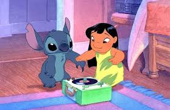

Analista de Dados Júnior | Especialista em BI
Sou formada em Contabilidade com uma paixão por transformar
números brutos em estratégias de negócio, atuando como Analista de Dados Júnior
e me aprofundando em Ciência de Dados.
Utilizo Python, SQL e ferramentas de visualização para limpar,
analisar e modelar dados, trazendo uma visão analítica contábil para a
inteligência de negócios. Meu objetivo é automatizar processos e gerar
insights que impactam diretamente a tomada de decisão.

Análise de catálogo e assistente virtual via NLP.
Modelo preditivo de sobrevivência usando Machine Learning.
Análise financeira e cálculo de ROI de ativos contábeis.